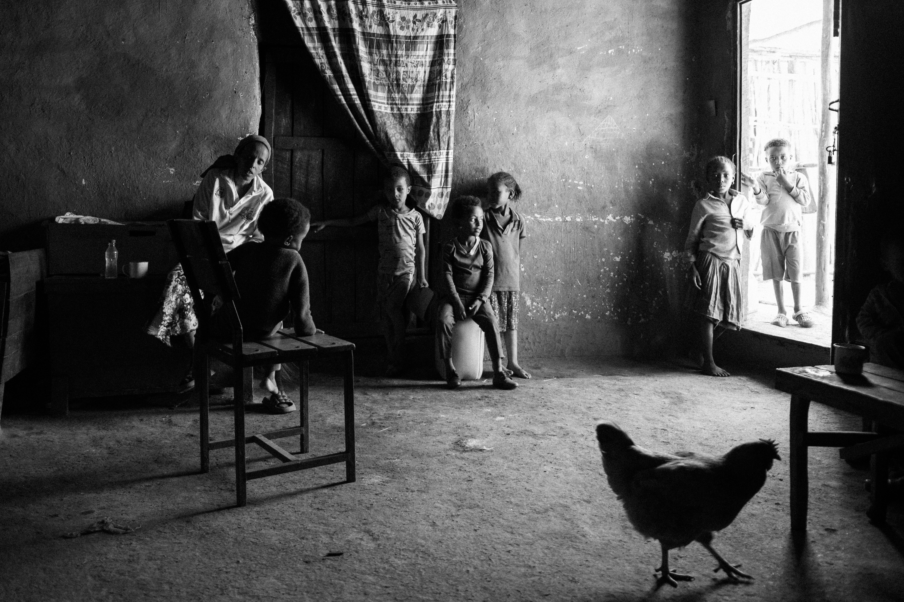
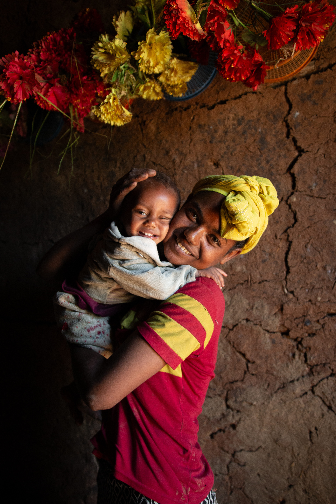
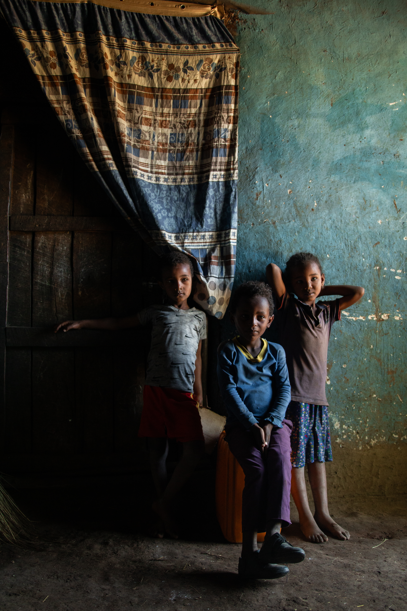

Acción Social
ONG Abay
Etiopía
Este evento intercultural tiene como objetivo dar visibilidad a la ONG Abay Etiopía, reconocida de utilidad pública, y celebrar la unión entre España y Etiopía poniendo en valor los proyectos educativos y de desarrollo que se llevan a cabo en el país.
Abay es una ONG española fundada en 2009 que trabaja en Etiopía combatiendo la pobreza mediante proyectos de educación, sanidad y desarrollo comunitario en Walmara y Addis Abeba.
Educación
Salud
Desarrollo Comunitario


